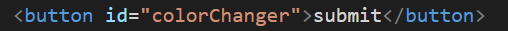
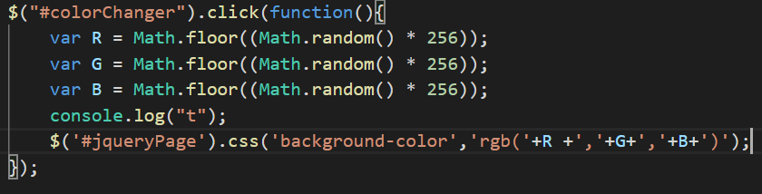

jQuery: A JavaScript Framework
jquery is a library of Javascript functions used to manipulate javascript DOM elements. Currently it is the most deployed javascript library, approximately 73% of the worlds top 10 million websites use some form of it. jquery works by simplifying the syntax for manipulating elements of a page, allowing for the devloper to create more dynamic and interactive pages.
Getting Started
loadingscript, $ selector, document ready function
In order to use jqeury, we first have to load the jquery library.
This is done by downloading a version of Jquery,
then by using the html script tag to load the script from its location
(In this example it is in the same directory as the code)
Jquery utilizes the "$" as a selector. Whenever we want to run jquery we wrap it in a selecter looking like $( ). This lets the program know that the proceeding code will be jquery, not plain jscript.
Uses
One of jquerys most notable attributes is the amount of additional libraries it contains
Jquery contains numerous plugins and libraries that allow for esay implementation of creative content.
There are plugins available that let you Vibrate a phone, create a slideshow, efficiently load a youtube video, the libraries are almost endless.
Responsiveness and simplicity
Important Concepts
Jquery has some very useful features which allow for you to manipulate html elements with ease.
1: Add class allows for you to attach a class attribute to a html elements
2: The .css() selector lets you change a css property of an element
3: Event handling in Jquery allows for you bind functions to html elements. This allows for the creation of responsive websites.
One of the most useful properties of Jquery is its simple approach to event handling. In combination with the css selector we're able to create better web pages. An example of this can be shown as follows:
Press me to change the page color
Code example:
Html Code
Jscript and Jquery Code
The submit button named "colorChanger" is bound to an event handler named ".click". When we click the button we randomise 3 RGB values and then assign them to the css property "background-color" of the pages body element named "jqueryPage" This gets us a random color every time we hit the button and then change the pages background to such.
Important Concepts
Jquery has some very useful features which allow for you to manipulate html elements with ease.
1: Add class allows for you to attach a class attribute to a html elements
2: The .css() selector lets you change a css property of an element
3: Event handling in Jquery allows for you bind functions to html elements. This allows for the creation of responsive websites.
Useful methods
find(): Allows you to search for a selector or element: find("#colorChange") or find("button")
hide() and show(): Used to hide or display elements on the webpage.
html(): will get the first html element that matches the input
append() and prepend(): allows you to insert elements into already existing elements
css() attr() and val():css() will change the css property of elements.
each(): This one is a little bit more complex, you call it like so: $("jquerySelector").each(array,functionToRunOnArray)
This will call the function on evcery index of the array.